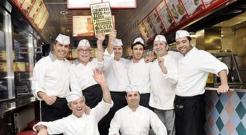
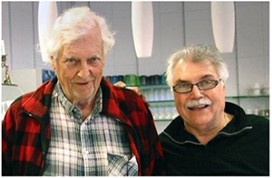

Om Vegabaren
Hos oss på Vegabaren finns en trivsam atmosfär fylld med nostalgi och med god mat. Enligt oss själva är vi även strategist belagda genom vår närhet till både Handens handelsområde och väg 73.
Vegabaren i Haninge söder om Stockholm röstades fram av Expressen som "Sveriges bästa korvmoj". Här ovanför ser du några av oss som gärna serverar dig när du besöker oss på "Sveriges bästa korvmoj". Inte undra på att Erdal Kurt, Carlo Taccola, Ali Polat, Nevzat Polat, Hasan Celen, Ahmet Polat och (sittande) Kadir Corum och Hüseyin Samanci jublar.
Vår Historia
Omkring år 1964 serverades Sveriges första Hamburgare, "en platt köttbulle" - Erik Engströms egna ord. Två mil söder om Stockholms centrum ligger Vegabaren - Sveriges bästa hamburgerbar! På 1950-talet fick man inte servera Hamburgare. Hamburgare var inte snabbmat, som snabbmat räknades bara korv med bröd, pölsa och köttbullar. Erik stod på sig och fick Sveriges myndigheter att ändra sig - så det är bara att buga sig alla ni andra snabbmatskedjor - Vegabaren var först!!!
Erik Engström och Carlo Taccola
Carlo Taccola började som diskare på Vegabaren, 1964. Så småningom arrenderade han Vegabaren för att senare tillsammans med Ali Polat köpa den. Kompanjonerna Carlo och Ali har tillsammans vidareutvecklat Vegabaren genom att bygga Vega Stadshotell samt skapa en samlingsplats för allehanda folkfester, musik och dans. Där har bl.a. popbandet The Animals spelat live ”The House of the Rising Sun”. Under flera år anordnades även bilträffen ”Grand Prix Raggarbil” och MC-träffen ”Easy Rider Festival”.
"Sveriges Bästa Korvmoj"
"Signore Korv-moj", italienaren Carlo Taccola, 68, har tårar i ögonen när han får diplomet. Expressens läsare har röstat fram Vegabaren i Haninge till "Sveriges bästa korvmoj". - Tack! Vi har slitit hårt i många år för att hamna i första klass, säger han. Gnistan i Carlos ögon är tänd och plötsligt släpper han lös sin ohämmade italienska glädje: - Jag måste få krama dig, och nöjer sig inte med en kram utan smackar på båda kinderna och ropar "uno, due..." Nu har Carlo Taccola och kompanjonen Ali Polat fått lön för allt slit. Carlo lämnade som yngling byn i Toscana för att hitta jobb i Norden. Drömde om att bli sjöman i Norge, men upptäckte att han blev sjösjuk. - När jag var 22 år fick jag börja som diskare på Vegabaren i Haninge. Då var det så kallt i den lilla kiosken att kapsylerna på läskflaskorna small av som kanonkulor...
Historiska Rötter
Tvärs över vägen låg på 1600-talet Söderby krog och Gästgiveri. Vegabarens moderna vägrestaurang är en historisk länk i matkulturen sedan 1600-talet och gästgiveriet lever vidare som Vega Stadshotell.
Intill ligger den gamla mjölnarbostaden, ett reveterat vitstruket tvåvåningshus. Huset byggdes på 1600-talet under drottning Kristinas tid. De halvmeter tjocka väggarna består av stampad lera och halm. I bostaden, som från 1911 ägdes av mjölnare Ragnar Grip låg även traktens telefonstation. Telefonstationen benämndes först Söderby och ändrades 1936 till Handen. Telefonväxeln sköttes av Ragnars syster Vanja.
På höjden bredvid mjölnarbostaden ligger ett ståtligt knuttimrat magasin, Söderby kvarns stora lada, numera en Antikhandel. Det är panelat och rödstruket, troligen från första hälften av 1800-talet. Ett litet uthus finns strax bredvid. På planen framför magasinet står en välvuxen gran. Straxt intill kan man fortfarande se grunden av den vattendrivna kvarnen som har brunnit ner.
För att dryga ut inkomsterna när telefonväxeln lades ner, anlade Ragnar en minigolfbana på västra sidan av Nynäsvägen och lät den väderkvarn som fortfarande står bakom Vegabaren symbolisera kvarnen. Han började sälja glass och korv i en kiosk, en rörelse som Erik Engström i slutet på 1950-talet tog över och utvecklade till Vegabaren.
På 1950-talet fick man endast servera snabbmat från kiosker. Som snabbmat räknades bara korv med bröd, pölsa och köttbullar. Erik pratade med Livsmedelsverket och undrade vad det var för skillnad mellan en köttbulle och en “platt köttbulle”.
Sveriges myndigheter ändrade sig - så det är bara att buga, alla ni andra snabbmatskedjor - Vegabaren var först!!!
Vi vill därför även hjärtligt tacka alla våra gamla, nya och blivande kunder för stöd och lojalitet. Tillsammans vi har byggt Haninges Historia!
Våra Ledord & Kvalitet
Vi är mycket noggranna vid vårt val av leverantörer. Därför samarbetar vi enbart med utvalda, seriosa leverantörer som vi känner och har fullt förtroende för och som i alla avseenden lever upp till våra högt ställda kvalitetskrav.
God mat för alla! Vi har en lång tradition av matglädje och i över 60 år har vi lagad god fast-food mat.
Våra ledord är matglädje, kvalitet, service och renlighet. Via Green Heart - med omtanke om gästens hälsa och välmående - tänker vi på ditt hjärta när vi tillagar mat och går på den "gröna linjen". Minst 25% av din måltid består därför av fräscha grönsaker.
Förmåner & Medlemskort
BlI MEDLEM
i Vegabaren för endast 30 kr, kortet ger Dig alltid:
5% RABATT, som dras direkt i kassan vid varje inköp.
VINSTCHANS
Numret på ditt Förmåns & Medlemskort fungerar som lottsedel. Vid flera tillfällen per år lottas fina vinster ut, som Du har
möjlighet att vinna.
SAMHÄLLS-SPECIAL
Medlemmar i samhällstjänst (Polis-Brandkår-Hemtjänst-Väktare-Taxi-Bussförare...) under yrkesutövning mellan kl. 22.00 - 05.00
får 10% rabatt.